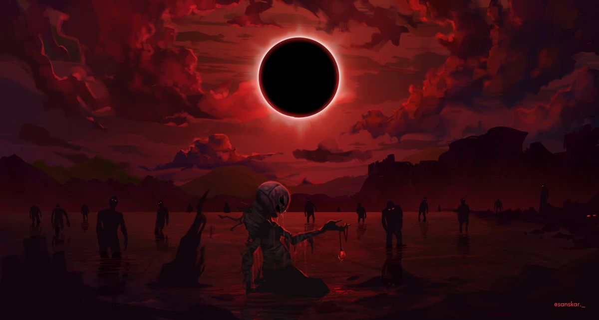
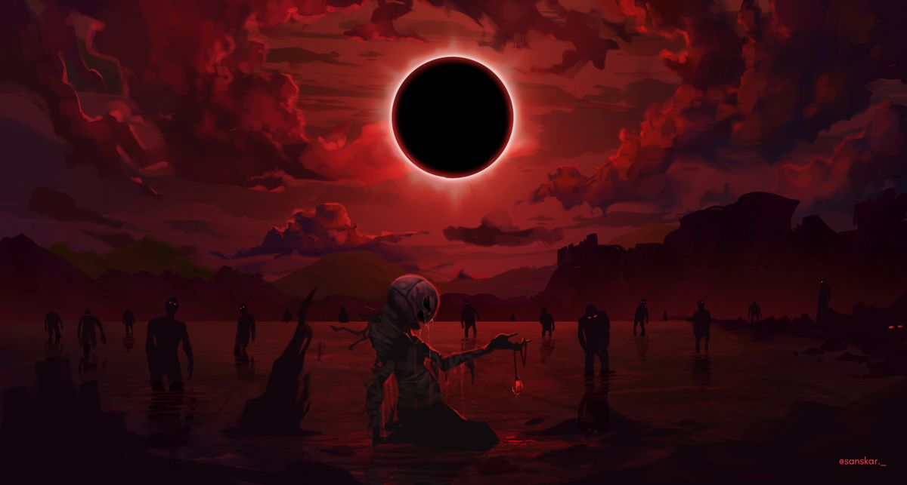
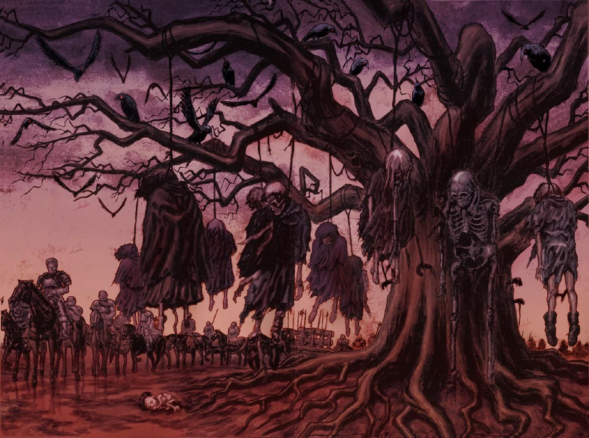
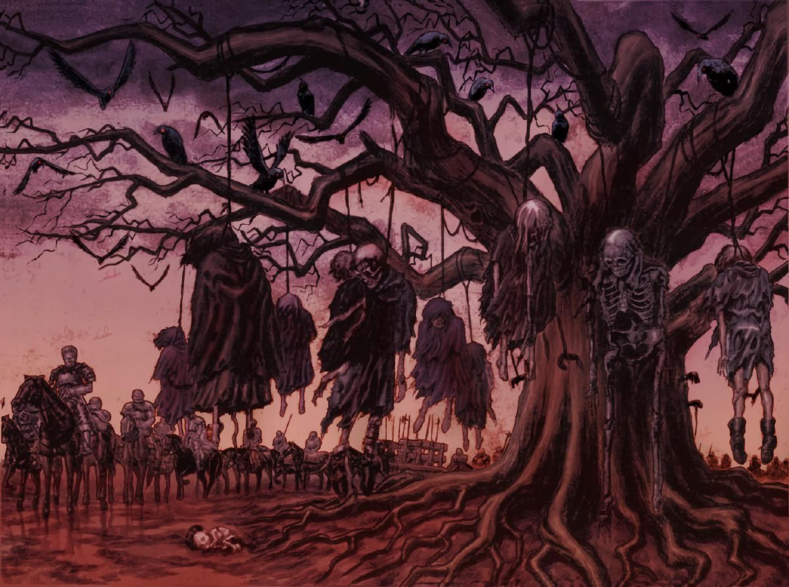

Гатс
Мандрівний мечник, що пройшов через пекло. Його шлях — помста й виживання.
Фан-сайт українською — темна фентезі-атмосфера
Сайт — це фан-проєкт, який містить: короткі описи, персонажі, галерея та хроніка. Матеріали містять дорослу тематику — будь ласка, уважно.
Берсерк — епічна манґа й аніме про воїна Гатса, його шлях, випробування та трагедії. На сайті — три головні блоки: персонажі, галерея та хроніка.
Мандрівний мечник, що пройшов через пекло. Його шлях — помста й виживання.

Харизматичний лідер із великими амбіціями. Його рішення змінюють долі.

Колишній командир, чия історія сповнена втрат і надії.
 

 
